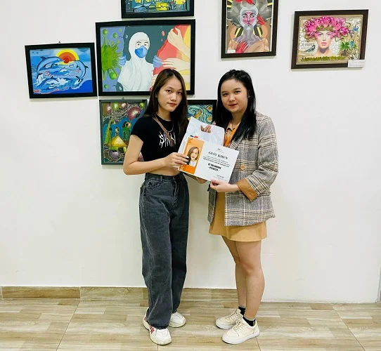
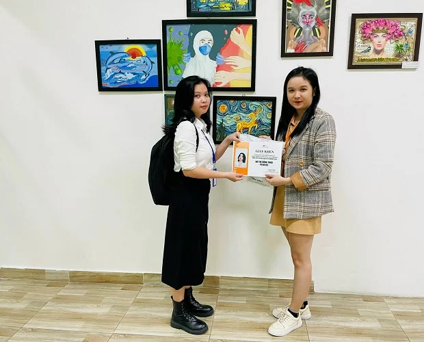

Nhận giải thưởng hấp dẫn nhờ chăm chỉ đi sự kiện - Chuyện có thật xảy ra tại FPoly HCM
Nhận giải thưởng hấp dẫn nhờ chăm chỉ đi sự kiện – Chuyện có thật xảy ra tại FPoly HCM
14:59 28/09/2022
Ngày 27/09 vừa qua, phòng CTSV tại Cao đẳng FPT Polytechnic HCM đã trao thưởng cho 10 bạn sinh viên có nhiều số điểm rèn luyện trên app myFPL nhờ chăm chỉ tham gia các sự kiện trong mùa Summer 2022. Hãy cùng điểm qua những “chú Ong” chuyên cần này nhé!
Mùa Summer 2022 vừa qua, là một mùa sự kiện với đong đầy những cảm xúc khác nhau. Có những sự kiện sẽ giúp các bạn “cháy” hết mình sau những giờ học tập căng thẳng, có những sự kiện giúp bạn lưu giữ được thật nhiều kỉ niệm bên thầy cô, bạn bè. Bên cạnh đó, các bạn còn được trải nghiệm về các kỹ năng sống, rèn luyện thực tiễn. Và điều đặc biệt nhất là khi tham gia hàng loạt các sự kiện do phòng Công tác Sinh viên tổ chức các bạn đã tích lũy thêm cho mình được rất nhiều điểm rèn luyện trong app myFPL.
Ngày 27/09 vừa qua, phòng CTSV cũng đã trao thưởng TOP 10 điểm rèn luyện trên app myFPL. Với sự nỗ lực và phấn đấu, các bạn đã tham gia rất nhiều sự kiện cũng như cuộc thi giành giải thưởng về cho trường với 1 giấy khen và 1 phần quà hấp dẫn.
Sinh viên Nguyễn Ánh Minh (áo trắng) – PS18657 đã xuất sắc đạt số điểm cao nhất trong app myFPL ở học kỳ Summer 2022
Bạn Nguyễn Ánh Minh chia sẻ: “Em rất bất ngờ là vì em không thể tin em được TOP 10 của app myFPL, không chỉ vậy mà còn được số điểm cao nhất nữa. Em rất vui và hạnh phúc khi nhận được thông báo này. Em rất cảm ơn và nhà trường đã tạo cơ hội cho chúng em tham gia những sự kiện và các cuộc thi để có thể tích lũy thêm điểm rèn luyện ạ. Các bạn ơi, hãy cố gắng thu thập thêm cho mình điểm rèn luyện khi tham gia sự kiện tại trường nhé!”

Sinh viên Lê Thị Nhung (áo đen) – PS18224 đã xuất sắc lọt vào TOP 10 app myFPL học kỳ Summer 2022
Bạn Lê Thị Nhung chia sẻ: “Em khá vui, cuối cùng thì sau hơn 2 năm học tại trường cũng có tờ giấy khen làm kỉ niệm của thời sinh viên, nghĩ thấy đi sự kiện vừa được học hỏi từ các sự kiện chuyên ngành vừa được khen thưởng thì cũng xứng đáng chen chúc trong các buổi sự kiện của trường. Các bạn tân sinh viên ơi, hãy tham gia nhiều hơn các buổi sự kiện, Workshop của ngành mình học tổ chức, tới đó vừa được học hỏi nhiều kiến thức, kinh nghiệm chuyên ngành từ thầy cô, anh chị trong ngành mà còn được vui chơi, tích điểm rèn luyện trên app myFPL để được Top 10 nhé.”

Võ Thị Hồng Thảo (áo trắng) – PS18519 đã xuất sắc lọt vào TOP 10 app myFPL học kỳ Summer 2022
Bạn Võ Thị Hồng Thảo chia sẻ: “Em rất vui khi được may mắn nằm trong Top 10 sinh viên tích cực tham gia sự kiện trên app myFPL và đã được nhận một phần quà vô cùng hấp dẫn! Để được kết quả thế này, các bạn sinh viên hãy đăng ký, tham gia sự kiện tại trường và check-in đầy đủ trên app MyFPL. Mỗi sự kiện chúng ta sẽ được cộng vào điểm rèn luyện trên app, bên cạnh đó các bạn cũng tích lũy được một kiến thức mới nè. Và biết đâu đó bạn cũng sẽ là 1 trong Top 10 app MyFPL tiếp theo thì sao!!!! Hẹn gặp lại các bạn tại Top 10 app myFPL vào kỳ sau nhé!”
Thật dễ dàng để nhận quà phải không nào? Các bạn hãy nhanh tay tải ngay app myFPL về cho “dế yêu” của mình để tích điểm dần dần mỗi khi tham gia sự kiện nhé! Biết đâu học kỳ Fall 2022 chúng ta lại gặp lại nhau tại top 10 cá nhân có điểm rèn luyện xuất sắc nhất thì sao?